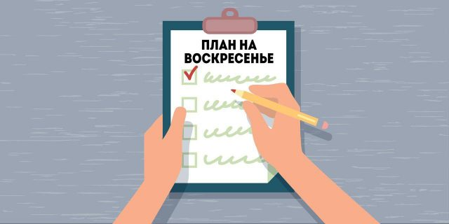

Список дел, которыми можно заменить скучные воскресенья

Список дел нa воскресенье
Прогулки
-
Выйдите на улицу и пройдитесь пешком до места, в котором никогда
небыли.
- Возьмите велосипед и прокатитесь за город.
-
Выйдите из дома без единой мысли и импровизируйте.
-
Отправьтесь фотографировать красивые места своего города.
-
Чтение
- Устройте книжный марафон и прочитайте книгу за один день.
-
Сходите в библиотеку и возьмите там книгу, которая вам понравится.
- Книгу учебную
- Книгу научно-популярную
- Книгу научную
- Книгу справочник
- Книгу художественную
-
Еда
- Сходите в магазин за покупками на неделю.
-
Приготовьте еду на неделю вперёд и разложите её по контейнерам.
- Найдите крутой рецепт и приготовьте что-то новое.
- Почистите холодильник.
-
Спорт
- Сходите на тренировку. Всё гениальное просто.
-
Отожмитесь максимальное количество раз и постарайтесь улучшить
этот результат.
-
Найдите школу йоги и опробуйте её
- Попробуйте научиться медитировать.
-
TV
- Достаньте из шкафа старую приставку и вспомните детство.
-
Откройте рейтинг лучших фильмов на «Кинопоиске» и начните
просматривать все фильмы сверху вниз.